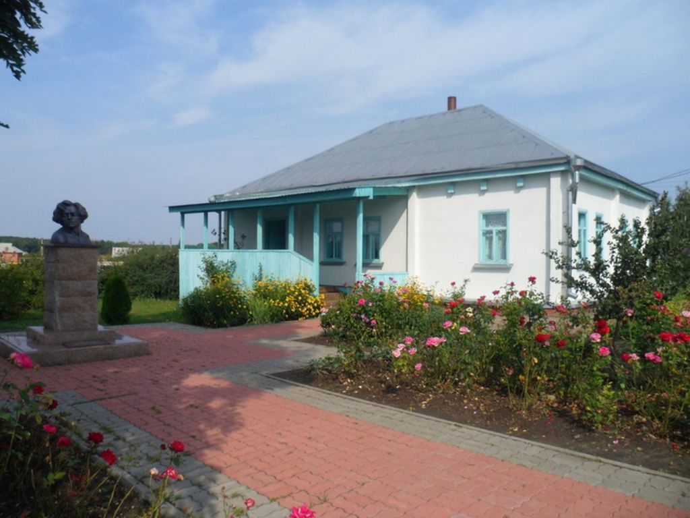
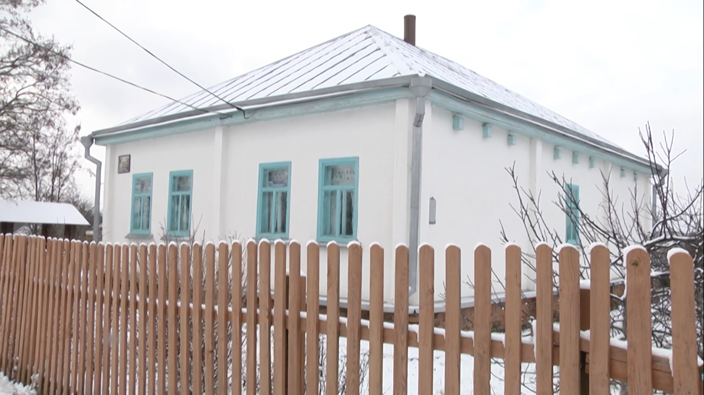

Дом-музей В.Я.Ерошенко
- Режим работы: С 9:00 до 18:00, в пятницу до 14:00,
понедельник - выходной. - Цена за вход: уточните по телефону (4725) 49-13-76.
- Местоположение: ул. Ерошенко, 15, Старый Оскол, Белгородская обл.
Дом-музей В.Я.Ерошенко был открыт 12 января 1990 года на основании решения Старооскольского городского Совета народных депутатов № 397 от 28.10.1986г. в рамках празднования 100-летия В. Я. Ерошенко. В настоящее время музей имеет земельный участок 2,4 гектара, в центре которого находится достоверно восстановленный дом.  Дом-музей располагает четырьмя постоянно действующими экспозиционными залами общей площадью 64 кв. м., которая воссоздает внутреннее убранство дома зажиточного крестьянина конца XIX – начала XX-го веков, многие предметы мебели, быта принадлежали семье Ерошенко. Среди множества экспонатов, фотографий, рассказывающих о творческой деятельности писателя, представлены фотографии зарубежного периода жизни писателя, предметы обучения незрячих, здесь же можно поближе познакомиться и с некоторыми его произведениями.  За более чем двадцатилетнюю деятельность музея собран и систематизирован огромный объем материала, раскрывающий многогранный талант писателя и неутомимый труд путешественника. К 120-летию со дня рождения писателя в 2010 году на территории Дома-музея установлен бюст В.Я.Ерошенко, проведен капитальный ремонт здания музея и благоустроена прилегающая к нему территория, установлена деревянная беседка, посажен яблоневый сад.